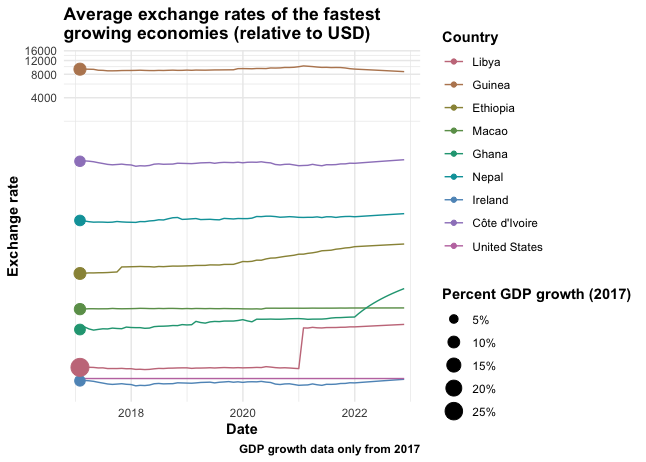

Building a Remote Currency Database with Docker and API Scraping
Docker, SQL, currency database, exchange rates, API scraping, R, GDP
This project focused on building a currency exchange database that updates daily and can be accessed remotely.
Workflow
The workflow combined API scraping, SQL database design, and deployment in a Docker container.
- Exchange Rates: Scraped daily USD-based exchange rates from exchangerate.host.
- Database Deployment: Ran the SQL database inside a Docker container and hosted it on Railway.app for remote access.
- Historical Data: Imported past exchange rate data to align with GDP growth periods.
- SQL Views: Created dynamic Views to automatically update monthly average exchange rates.
- Additional Data Sources:
- Worldometers GDP growth data.
- iban.com country names and currency codes.
Results

The database design linked exchange rates, GDP data, and currency codes into a single relational structure. Views simplified queries by producing rolling monthly averages.
Using R, I analyzed GDP growth alongside exchange rate shifts. The focus example was the fastest growing economies of 2017.

Discussion
The analysis showed that while some countries had high GDP growth in 2017, their currencies weakened against the US dollar. The Euro, which often tracks closely with USD, also lagged during this period.
This highlights a key point in international comparisons: GDP growth figures can look different once exchange rate effects are considered. A strong dollar can exaggerate the underperformance of other currencies, making raw growth metrics less comparable across borders.
FAQ: Docker, Data Scraping, and Financial APIs
Why use Docker?
Docker made the database portable and easy to deploy on Railway.
Why scrape data instead of downloading CSVs?
Daily API scraping ensured the database stayed current and automatically provides the most updated data.
How often does the database update?
Exchange rates are pulled once per day, while SQL Views provide rolling monthly averages.
Can this workflow be applied to other financial data?
Yes. The structure works for any API-driven dataset where regular updates and historical context are important.
Oliver F. Anderson, MS – Computational Biologist, Data Scientist, and Research Consultant based in Portland, Oregon. I design data-driven solutions in bioinformatics, machine learning, and AI automation for research and biotech.
Back to top